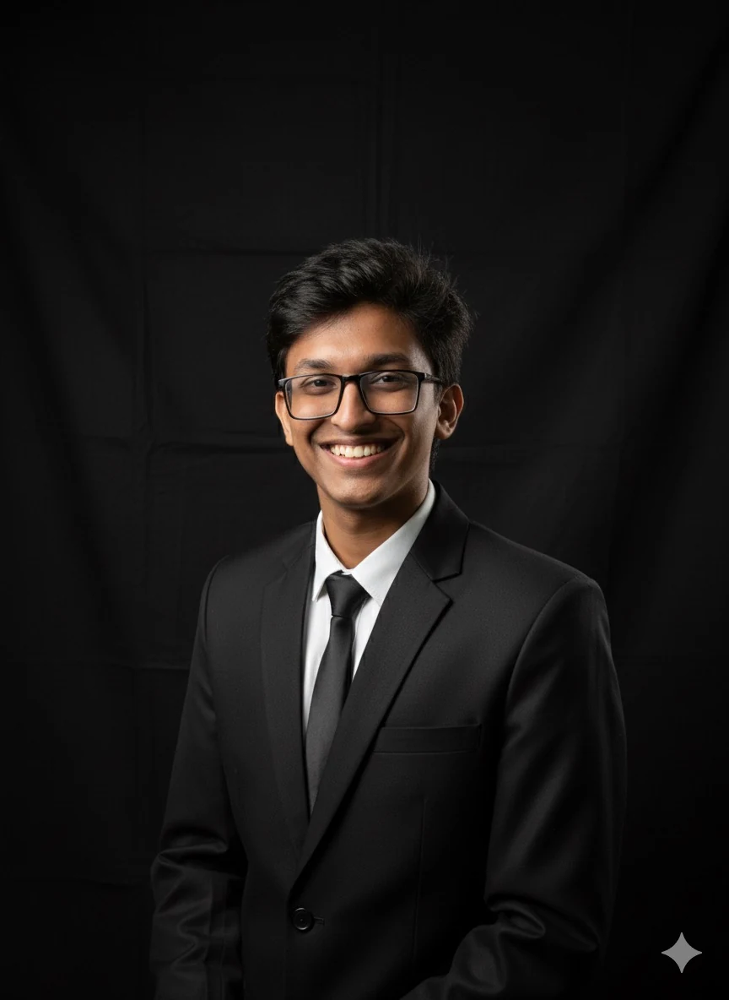

Open to research and development opportunities
Building intelligent software for real-world constraints.
I’m Tanyim Hassan Auvy, a Computer Science student at BRAC University. I work across algorithms, databases, mobile apps, and Retrieval-Augmented Generation, with a long-term goal of bringing LLM and RAG capabilities to resource-constrained devices.

Current focus
RAG + Reinforcement Learning
Based in
Bangladesh
01 / About
Curious by nature, engineering-minded by practice.
I am a Computer Science student at BRAC University with growing experience in software engineering and thesis research. My main interests are Retrieval-Augmented Generation, reinforcement learning, data structures and algorithms, and database systems.
I enjoy solving puzzles, designing game mechanics, and brainstorming systems from first principles. My projects span web platforms, Android applications, computer graphics, file systems, and educational database tools. In the future, I aim to work as an app developer and researcher, especially on efficient RAG and RL systems that can support useful AI experiences on mobile and other small devices.
02 / Technical toolkit
Tools I use to turn ideas into working systems.
Programming
Web development
Data & databases
Research & engineering
Additional languagesSpanishTurkish
03 / Selected work
Projects across web, mobile, graphics, and systems.
01Web development
WelcomeSQL
An interactive SQL learning platform covering SELECT, WHERE, JOIN, schema creation, data modification, aggregation, and practical table relationships.
View repository ↗02Android app
EveSync
A menstrual-cycle tracking application with period logging, cycle prediction, and practical wellbeing guidance.
View repository ↗033D game
SeaSurf 3D
An academic 3D surfing simulator built with Python and OpenGL, featuring real-time graphics and interactive game mechanics.
View repository ↗04Web platform
InternLink
An internship management system connecting students, employers, and administrators through structured applications and backend workflows.
View repository ↗05Cross-platform app
VangtiChai
A quick money-change calculator designed to compute practical note and coin combinations.
View repository ↗06Systems programming
VS File System
A very-simple file-system image generator implemented in C, supported by filesystem diagrams and low-level data-structure design.
View repository ↗07Puzzle game
Tango
A Python puzzle-game project designed around logical thinking, playful interaction, and problem solving.
View repository ↗04 / Research
Learning when retrieval is actually necessary.
My ongoing thesis explores reward-based retrieval triggering for large language models, replacing fixed retrieval rules with learned decisions.
Read Research Draft Ongoing · 2025–2026
Reward-based Retrieval Triggering for Large Language Models
The project integrates reinforcement learning into RAG so a model can learn when external retrieval is useful, balancing answer quality against the cost of unnecessary searches.
- My contribution
- Coding, model training, LaTeX editing, and poster design
- Evaluation datasets
- 2WikiMultihopQA, HotpotQA, IIRC, and StrategyQA
- Model families
- LLaMA-2-Chat and Vicuna
- Supervisor
- Dr. Swakkhar Shatabda
05 / Education
Academic foundation.
B.Sc. in Computer Science
BRAC University
Focus: algorithms, databases, software engineering, LLMs, RAG, and reinforcement learning.Higher Secondary Certificate — Science
Amla Government College
GPA 5.00Secondary School Certificate — Science
Kushtia High School
GPA 4.7206 / Contact
Let’s build something thoughtful.
I’m interested in research collaborations, software projects, internships, and opportunities related to RAG, reinforcement learning, algorithms, and teaching.